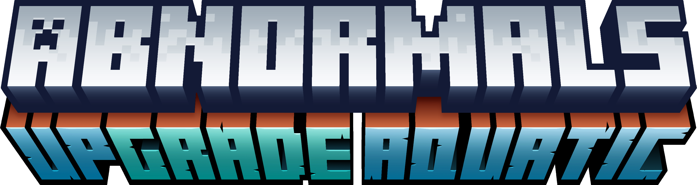
碧海新生 Upgrade Aquatic
共 375 个条目 · upgrade_aquatic
版本: 7.0.1 · 来源: upgrade_aquatic-1.21.1-7.0.1.jar
Expands upon Update Aquatic and aquatic life as a whole with new enemies, sea creatures, and building blocks.
MC百科中文名: 碧海新生
MC百科页面: https://www.mcmod.cn/class/2916.html（碧海新生 (UpgradeAquatic)）
官方介绍 （Modrinth · 中文版由 GLM AI 翻译，仅供参考）
📖 关于：
Upgrade Aquatic 的重点是打磨"水域更新"中加入的内容，包括海洋、河流与失眠机制。我们的目标是提供独特的内容、画面与玩法，同时不丢失 Minecraft 本来的味道。一些值得一提的特性：Thrasher（锤鲨），一种会使用声呐的幻想鲨鱼类生物，会用双颚疯狂撕碎一切能咬住的东西，还会掉落可用于合成三叉戟的材料；借助砂岩下方的气泡柱实现沙子的可再生获取；以及会生成海晶珊瑚与鹦鹉螺生物的海洋峡谷！
由 GLM AI 翻译，仅供参考
查看英文原文（Modrinth）
📖 About:
The focus of Upgrade Aquatic is to improve content added in the Update Aquatic, including oceans, rivers, and insomnia. Our intent is to offer unique content, visuals, and gameplay while staying true to the feel of Minecraft. Some notable features are the Thrasher, a fantasy shark-like mob that uses sonar, thrashes anything it can catch in its jaws, and drops crafting ingredients for the trident; Renewable sand via bubble columns below sandstone; and Ocean Ravines spawning Prismarine Coral and Nautilus mobs!
资料来源：Upgrade Aquatic
物品与方块
upgrade_aquatic:acan_coral · 方块
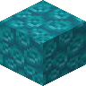
糖果脑珊瑚块upgrade_aquatic:acan_coral_block · 方块糖果脑珊瑚扇
upgrade_aquatic:acan_coral_fan · 方块墙上的糖果脑珊瑚扇
upgrade_aquatic:acan_coral_wall_fan · 方块
 糖果脑珊瑚石
糖果脑珊瑚石upgrade_aquatic:acan_coralstone · 方块
糖果脑珊瑚石台阶upgrade_aquatic:acan_coralstone_slab · 方块
糖果脑珊瑚石楼梯upgrade_aquatic:acan_coralstone_stairs · 方块糖果脑珊瑚石墙
upgrade_aquatic:acan_coralstone_wall · 方块
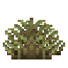
滨草upgrade_aquatic:beachgrass · 方块
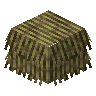
滨草茅草upgrade_aquatic:beachgrass_thatch · 方块
 滨草茅草台阶
滨草茅草台阶upgrade_aquatic:beachgrass_thatch_slab · 方块
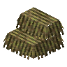
滨草茅草楼梯upgrade_aquatic:beachgrass_thatch_stairs · 方块
 睡袋
睡袋upgrade_aquatic:bedroll · 方块?黑色睡袋
upgrade_aquatic:black_bedroll · 方块?蓝色睡袋
upgrade_aquatic:blue_bedroll · 方块
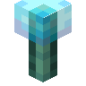
蓝色凝胶火把upgrade_aquatic:blue_jelly_torch · 方块
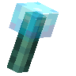
墙上的蓝色凝胶火把upgrade_aquatic:blue_jelly_wall_torch · 方块
 熟梭鱼草
熟梭鱼草upgrade_aquatic:boiled_pickerelweed · 物品
 煮过的梭鱼草块
煮过的梭鱼草块upgrade_aquatic:boiled_pickerelweed_block · 方块
 脑纹珊瑚石
脑纹珊瑚石upgrade_aquatic:brain_coralstone · 方块
脑纹珊瑚石台阶upgrade_aquatic:brain_coralstone_slab · 方块
脑纹珊瑚石楼梯upgrade_aquatic:brain_coralstone_stairs · 方块
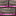
脑纹珊瑚石墙upgrade_aquatic:brain_coralstone_wall · 方块枝状珊瑚
upgrade_aquatic:branch_coral · 方块
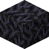
枝状珊瑚块upgrade_aquatic:branch_coral_block · 方块枝状珊瑚扇
upgrade_aquatic:branch_coral_fan · 方块墙上的枝状珊瑚扇
upgrade_aquatic:branch_coral_wall_fan · 方块
 枝状珊瑚石
枝状珊瑚石upgrade_aquatic:branch_coralstone · 方块
枝状珊瑚石台阶upgrade_aquatic:branch_coralstone_slab · 方块
枝状珊瑚石楼梯upgrade_aquatic:branch_coralstone_stairs · 方块枝状珊瑚石墙
upgrade_aquatic:branch_coralstone_wall · 方块?棕色睡袋
upgrade_aquatic:brown_bedroll · 方块
 气泡珊瑚石
气泡珊瑚石upgrade_aquatic:bubble_coralstone · 方块
气泡珊瑚石台阶upgrade_aquatic:bubble_coralstone_slab · 方块
气泡珊瑚石楼梯upgrade_aquatic:bubble_coralstone_stairs · 方块气泡珊瑚石墙
upgrade_aquatic:bubble_coralstone_wall · 方块
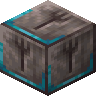
雕纹糖果脑珊瑚石upgrade_aquatic:chiseled_acan_coralstone · 方块
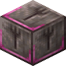
雕纹脑纹珊瑚石upgrade_aquatic:chiseled_brain_coralstone · 方块
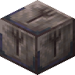
雕纹枝状珊瑚石upgrade_aquatic:chiseled_branch_coralstone · 方块
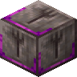
雕纹气泡珊瑚石upgrade_aquatic:chiseled_bubble_coralstone · 方块
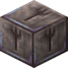
雕纹铬珊瑚石upgrade_aquatic:chiseled_chrome_coralstone · 方块
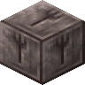
雕纹珊瑚石upgrade_aquatic:chiseled_coralstone · 方块
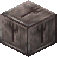
雕纹失活的珊瑚石upgrade_aquatic:chiseled_dead_coralstone · 方块
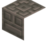
浮木雕纹书架upgrade_aquatic:chiseled_driftwood_bookshelf · 方块
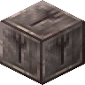
雕纹远古海晶珊瑚石upgrade_aquatic:chiseled_elder_prismarine_coralstone · 方块
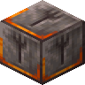
雕纹软指珊瑚石upgrade_aquatic:chiseled_finger_coralstone · 方块
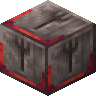
雕纹火珊瑚石upgrade_aquatic:chiseled_fire_coralstone · 方块
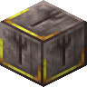
雕纹鹿角珊瑚石upgrade_aquatic:chiseled_horn_coralstone · 方块
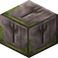
雕纹苔绿珊瑚石upgrade_aquatic:chiseled_moss_coralstone · 方块
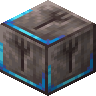
雕纹花瓣珊瑚石upgrade_aquatic:chiseled_petal_coralstone · 方块
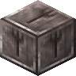
雕纹枕状珊瑚石upgrade_aquatic:chiseled_pillow_coralstone · 方块
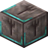
雕纹海晶珊瑚石upgrade_aquatic:chiseled_prismarine_coralstone · 方块
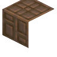
桑木雕纹书架upgrade_aquatic:chiseled_river_bookshelf · 方块
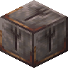
雕纹礁石珊瑚石upgrade_aquatic:chiseled_rock_coralstone · 方块
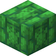
雕纹鳞甲砖瓦upgrade_aquatic:chiseled_scute_shingles · 方块
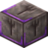
雕纹丝珊瑚石upgrade_aquatic:chiseled_silk_coralstone · 方块
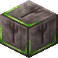
雕纹星状珊瑚石upgrade_aquatic:chiseled_star_coralstone · 方块
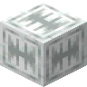
雕纹长尾鲨齿砖upgrade_aquatic:chiseled_tooth_bricks · 方块
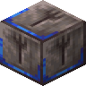
雕纹管珊瑚石upgrade_aquatic:chiseled_tube_coralstone · 方块铬珊瑚
upgrade_aquatic:chrome_coral · 方块
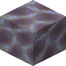
铬珊瑚块upgrade_aquatic:chrome_coral_block · 方块铬珊瑚扇
upgrade_aquatic:chrome_coral_fan · 方块墙上的铬珊瑚扇
upgrade_aquatic:chrome_coral_wall_fan · 方块
 铬珊瑚石
铬珊瑚石upgrade_aquatic:chrome_coralstone · 方块
铬珊瑚石台阶upgrade_aquatic:chrome_coralstone_slab · 方块
铬珊瑚石楼梯upgrade_aquatic:chrome_coralstone_stairs · 方块铬珊瑚石墙
upgrade_aquatic:chrome_coralstone_wall · 方块
 熟蓑鲉
熟蓑鲉upgrade_aquatic:cooked_lionfish · 物品
 熟鲈鱼
熟鲈鱼upgrade_aquatic:cooked_perch · 物品
 熟狗鱼
熟狗鱼upgrade_aquatic:cooked_pike · 物品
 珊瑚石
珊瑚石upgrade_aquatic:coralstone · 方块
珊瑚石台阶upgrade_aquatic:coralstone_slab · 方块
珊瑚石楼梯upgrade_aquatic:coralstone_stairs · 方块
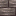
珊瑚石墙upgrade_aquatic:coralstone_wall · 方块?青色睡袋
upgrade_aquatic:cyan_bedroll · 方块失活的糖果脑珊瑚
upgrade_aquatic:dead_acan_coral · 方块
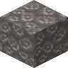
失活的糖果脑珊瑚块upgrade_aquatic:dead_acan_coral_block · 方块失活的糖果脑珊瑚扇
upgrade_aquatic:dead_acan_coral_fan · 方块墙上的失活糖果脑珊瑚扇
upgrade_aquatic:dead_acan_coral_wall_fan · 方块失活的枝状珊瑚
upgrade_aquatic:dead_branch_coral · 方块
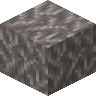
失活的枝状珊瑚块upgrade_aquatic:dead_branch_coral_block · 方块失活的枝状珊瑚扇
upgrade_aquatic:dead_branch_coral_fan · 方块墙上的失活枝状珊瑚扇
upgrade_aquatic:dead_branch_coral_wall_fan · 方块失活的铬珊瑚
upgrade_aquatic:dead_chrome_coral · 方块
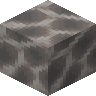
失活的铬珊瑚块upgrade_aquatic:dead_chrome_coral_block · 方块失活的铬珊瑚扇
upgrade_aquatic:dead_chrome_coral_fan · 方块墙上的失活铬珊瑚扇
upgrade_aquatic:dead_chrome_coral_wall_fan · 方块
 失活的珊瑚石
失活的珊瑚石upgrade_aquatic:dead_coralstone · 方块
失活的珊瑚石台阶upgrade_aquatic:dead_coralstone_slab · 方块
失活的珊瑚石楼梯upgrade_aquatic:dead_coralstone_stairs · 方块
 失活的珊瑚石墙
失活的珊瑚石墙upgrade_aquatic:dead_coralstone_wall · 方块失活的软指珊瑚
upgrade_aquatic:dead_finger_coral · 方块
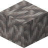
失活的软指珊瑚块upgrade_aquatic:dead_finger_coral_block · 方块失活的软指珊瑚扇
upgrade_aquatic:dead_finger_coral_fan · 方块墙上的失活软指珊瑚扇
upgrade_aquatic:dead_finger_coral_wall_fan · 方块
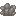
失活的苔绿珊瑚upgrade_aquatic:dead_moss_coral · 方块
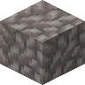
失活的苔绿珊瑚块upgrade_aquatic:dead_moss_coral_block · 方块失活的苔绿珊瑚扇
upgrade_aquatic:dead_moss_coral_fan · 方块墙上的失活苔绿珊瑚扇
upgrade_aquatic:dead_moss_coral_wall_fan · 方块失活的花瓣珊瑚
upgrade_aquatic:dead_petal_coral · 方块
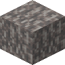
失活的花瓣珊瑚块upgrade_aquatic:dead_petal_coral_block · 方块失活的花瓣珊瑚扇
upgrade_aquatic:dead_petal_coral_fan · 方块墙上的失活花瓣珊瑚扇
upgrade_aquatic:dead_petal_coral_wall_fan · 方块
 失活的枕状珊瑚
失活的枕状珊瑚upgrade_aquatic:dead_pillow_coral · 方块
 失活的枕状珊瑚块
失活的枕状珊瑚块upgrade_aquatic:dead_pillow_coral_block · 方块失活的枕状珊瑚扇
upgrade_aquatic:dead_pillow_coral_fan · 方块墙上的失活枕状珊瑚扇
upgrade_aquatic:dead_pillow_coral_wall_fan · 方块失活的礁石珊瑚
upgrade_aquatic:dead_rock_coral · 方块
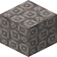
失活的礁石珊瑚块upgrade_aquatic:dead_rock_coral_block · 方块失活的礁石珊瑚扇
upgrade_aquatic:dead_rock_coral_fan · 方块墙上的失活礁石珊瑚扇
upgrade_aquatic:dead_rock_coral_wall_fan · 方块失活的丝珊瑚
upgrade_aquatic:dead_silk_coral · 方块
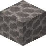
失活的丝珊瑚块upgrade_aquatic:dead_silk_coral_block · 方块失活的丝珊瑚扇
upgrade_aquatic:dead_silk_coral_fan · 方块墙上的失活丝珊瑚扇
upgrade_aquatic:dead_silk_coral_wall_fan · 方块失活的星状珊瑚
upgrade_aquatic:dead_star_coral · 方块
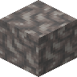
失活的星状珊瑚块upgrade_aquatic:dead_star_coral_block · 方块失活的星状珊瑚扇
upgrade_aquatic:dead_star_coral_fan · 方块墙上的失活星状珊瑚扇
upgrade_aquatic:dead_star_coral_wall_fan · 方块唱片残片
upgrade_aquatic:disc_fragment_atlantis · 物品
 浮木
浮木upgrade_aquatic:driftwood · 方块
 浮木蜂箱
浮木蜂箱upgrade_aquatic:driftwood_beehive · 方块
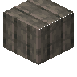
浮木直纹板upgrade_aquatic:driftwood_boards · 方块
 浮木船
浮木船upgrade_aquatic:driftwood_boat · 物品
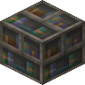
浮木书架upgrade_aquatic:driftwood_bookshelf · 方块
 浮木按钮
浮木按钮upgrade_aquatic:driftwood_button · 方块
浮木箱子upgrade_aquatic:driftwood_chest · 方块
 浮木运输船
浮木运输船upgrade_aquatic:driftwood_chest_boat · 物品
 浮木门
浮木门upgrade_aquatic:driftwood_door · 方块
浮木栅栏upgrade_aquatic:driftwood_fence · 方块
浮木栅栏门upgrade_aquatic:driftwood_fence_gate · 方块
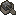
浮木动力船upgrade_aquatic:driftwood_furnace_boat · 物品
 悬挂式浮木告示牌
悬挂式浮木告示牌upgrade_aquatic:driftwood_hanging_sign · 方块
 浮木梯子
浮木梯子upgrade_aquatic:driftwood_ladder · 方块
浮木原木upgrade_aquatic:driftwood_log · 方块
 浮木木板
浮木木板upgrade_aquatic:driftwood_planks · 方块
浮木压力板upgrade_aquatic:driftwood_pressure_plate · 方块
 浮木告示牌
浮木告示牌upgrade_aquatic:driftwood_sign · 方块
浮木台阶upgrade_aquatic:driftwood_slab · 方块
浮木楼梯upgrade_aquatic:driftwood_stairs · 方块
 浮木活板门
浮木活板门upgrade_aquatic:driftwood_trapdoor · 方块
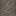
墙上的悬挂式浮木告示牌upgrade_aquatic:driftwood_wall_hanging_sign · 方块
墙上的浮木告示牌upgrade_aquatic:driftwood_wall_sign · 方块
 溺尸村民刷怪蛋
溺尸村民刷怪蛋upgrade_aquatic:drowned_villager_spawn_egg · 物品
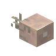
远古之眼upgrade_aquatic:elder_eye · 方块远古海晶珊瑚
upgrade_aquatic:elder_prismarine_coral · 方块
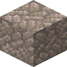
远古海晶珊瑚块upgrade_aquatic:elder_prismarine_coral_block · 方块远古海晶珊瑚扇
upgrade_aquatic:elder_prismarine_coral_fan · 方块远古海晶珊瑚喷头
upgrade_aquatic:elder_prismarine_coral_shower · 方块墙上的远古海晶珊瑚扇
upgrade_aquatic:elder_prismarine_coral_wall_fan · 方块
 远古海晶珊瑚石
远古海晶珊瑚石upgrade_aquatic:elder_prismarine_coralstone · 方块
远古海晶珊瑚石台阶upgrade_aquatic:elder_prismarine_coralstone_slab · 方块
远古海晶珊瑚石楼梯upgrade_aquatic:elder_prismarine_coralstone_stairs · 方块远古海晶珊瑚石墙
upgrade_aquatic:elder_prismarine_coralstone_wall · 方块包埋鹦鹉螺的石头
upgrade_aquatic:embedded_ammonite · 方块软指珊瑚
upgrade_aquatic:finger_coral · 方块软指珊瑚块
upgrade_aquatic:finger_coral_block · 方块软指珊瑚扇
upgrade_aquatic:finger_coral_fan · 方块墙上的软指珊瑚扇
upgrade_aquatic:finger_coral_wall_fan · 方块
 软指珊瑚石
软指珊瑚石upgrade_aquatic:finger_coralstone · 方块
软指珊瑚石台阶upgrade_aquatic:finger_coralstone_slab · 方块
软指珊瑚石楼梯upgrade_aquatic:finger_coralstone_stairs · 方块软指珊瑚石墙
upgrade_aquatic:finger_coralstone_wall · 方块
 火珊瑚石
火珊瑚石upgrade_aquatic:fire_coralstone · 方块
火珊瑚石台阶upgrade_aquatic:fire_coralstone_slab · 方块
火珊瑚石楼梯upgrade_aquatic:fire_coralstone_stairs · 方块火珊瑚石墙
upgrade_aquatic:fire_coralstone_wall · 方块
耀翼刷怪蛋upgrade_aquatic:flare_spawn_egg · 物品
 开花灯心草
开花灯心草upgrade_aquatic:flowering_rush · 方块?玻璃门
upgrade_aquatic:glass_door · 方块?玻璃活板门
upgrade_aquatic:glass_trapdoor · 方块发光鱿鱼桶
upgrade_aquatic:glow_squid_bucket · 物品
鹅刷怪蛋upgrade_aquatic:goose_spawn_egg · 物品?灰色睡袋
upgrade_aquatic:gray_bedroll · 方块
巨型长尾鲨刷怪蛋upgrade_aquatic:great_thrasher_spawn_egg · 物品?绿色睡袋
upgrade_aquatic:green_bedroll · 方块绿色凝胶火把
upgrade_aquatic:green_jelly_torch · 方块墙上的绿色凝胶火把
upgrade_aquatic:green_jelly_wall_torch · 方块
 鹿角珊瑚石
鹿角珊瑚石upgrade_aquatic:horn_coralstone · 方块
鹿角珊瑚石台阶upgrade_aquatic:horn_coralstone_slab · 方块
鹿角珊瑚石楼梯upgrade_aquatic:horn_coralstone_stairs · 方块鹿角珊瑚石墙
upgrade_aquatic:horn_coralstone_wall · 方块水母桶
upgrade_aquatic:jellyfish_bucket · 物品
水母刷怪蛋upgrade_aquatic:jellyfish_spawn_egg · 物品
 海带块
海带块upgrade_aquatic:kelp_block · 方块
 海带圆石
海带圆石upgrade_aquatic:kelpy_cobblestone · 方块
 海带圆石砖台阶
海带圆石砖台阶upgrade_aquatic:kelpy_cobblestone_brick_slab · 方块
 海带圆石砖楼梯
海带圆石砖楼梯upgrade_aquatic:kelpy_cobblestone_brick_stairs · 方块
 海带圆石砖墙
海带圆石砖墙upgrade_aquatic:kelpy_cobblestone_brick_wall · 方块
 海带圆石砖
海带圆石砖upgrade_aquatic:kelpy_cobblestone_bricks · 方块
海带圆石台阶upgrade_aquatic:kelpy_cobblestone_slab · 方块
海带圆石楼梯upgrade_aquatic:kelpy_cobblestone_stairs · 方块
 海带圆石瓦台阶
海带圆石瓦台阶upgrade_aquatic:kelpy_cobblestone_tile_slab · 方块
 海带圆石瓦楼梯
海带圆石瓦楼梯upgrade_aquatic:kelpy_cobblestone_tile_stairs · 方块
 海带圆石瓦墙
海带圆石瓦墙upgrade_aquatic:kelpy_cobblestone_tile_wall · 方块
 海带圆石瓦
海带圆石瓦upgrade_aquatic:kelpy_cobblestone_tiles · 方块海带圆石墙
upgrade_aquatic:kelpy_cobblestone_wall · 方块
 海带石砖台阶
海带石砖台阶upgrade_aquatic:kelpy_stone_brick_slab · 方块
海带石砖楼梯upgrade_aquatic:kelpy_stone_brick_stairs · 方块海带石砖墙
upgrade_aquatic:kelpy_stone_brick_wall · 方块
海带石砖upgrade_aquatic:kelpy_stone_bricks · 方块浮木大型船
upgrade_aquatic:large_driftwood_boat · 物品桑木大型船
upgrade_aquatic:large_river_boat · 物品?淡蓝色睡袋
upgrade_aquatic:light_blue_bedroll · 方块?淡灰色睡袋
upgrade_aquatic:light_gray_bedroll · 方块?黄绿色睡袋
upgrade_aquatic:lime_bedroll · 方块
 生蓑鲉
生蓑鲉upgrade_aquatic:lionfish · 物品蓑鲉桶
upgrade_aquatic:lionfish_bucket · 物品
蓑鲉刷怪蛋upgrade_aquatic:lionfish_spawn_egg · 物品
 荧光海晶石
荧光海晶石upgrade_aquatic:luminous_prismarine · 方块
 荧光海晶石台阶
荧光海晶石台阶upgrade_aquatic:luminous_prismarine_slab · 方块荧光海晶石楼梯
upgrade_aquatic:luminous_prismarine_stairs · 方块?品红色睡袋
upgrade_aquatic:magenta_bedroll · 方块苔绿珊瑚
upgrade_aquatic:moss_coral · 方块苔绿珊瑚块
upgrade_aquatic:moss_coral_block · 方块苔绿珊瑚扇
upgrade_aquatic:moss_coral_fan · 方块墙上的苔绿珊瑚扇
upgrade_aquatic:moss_coral_wall_fan · 方块
 苔绿珊瑚石
苔绿珊瑚石upgrade_aquatic:moss_coralstone · 方块
苔绿珊瑚石台阶upgrade_aquatic:moss_coralstone_slab · 方块
苔绿珊瑚石楼梯upgrade_aquatic:moss_coralstone_stairs · 方块苔绿珊瑚石墙
upgrade_aquatic:moss_coralstone_wall · 方块
 桑葚
桑葚upgrade_aquatic:mulberry · 物品
 桑葚夹心面包
桑葚夹心面包upgrade_aquatic:mulberry_bread · 物品桑葚果酱块
upgrade_aquatic:mulberry_jam_block · 方块
 桑葚果酱瓶
桑葚果酱瓶upgrade_aquatic:mulberry_jam_bottle · 物品
 桑葚派
桑葚派upgrade_aquatic:mulberry_pie · 物品
 篮装桑葚
篮装桑葚upgrade_aquatic:mulberry_punnet · 方块桑葚藤
upgrade_aquatic:mulberry_vine · 方块
 音乐唱片
音乐唱片upgrade_aquatic:music_disc_atlantis · 物品鹦鹉螺桶
upgrade_aquatic:nautilus_bucket · 物品
鹦鹉螺刷怪蛋upgrade_aquatic:nautilus_spawn_egg · 物品?橙色睡袋
upgrade_aquatic:orange_bedroll · 方块橙色凝胶火把
upgrade_aquatic:orange_jelly_torch · 方块墙上的橙色凝胶火把
upgrade_aquatic:orange_jelly_wall_torch · 方块
 生鲈鱼
生鲈鱼upgrade_aquatic:perch · 物品鲈鱼桶
upgrade_aquatic:perch_bucket · 物品
鲈鱼刷怪蛋upgrade_aquatic:perch_spawn_egg · 物品花瓣珊瑚
upgrade_aquatic:petal_coral · 方块花瓣珊瑚块
upgrade_aquatic:petal_coral_block · 方块花瓣珊瑚扇
upgrade_aquatic:petal_coral_fan · 方块墙上的花瓣珊瑚扇
upgrade_aquatic:petal_coral_wall_fan · 方块
 花瓣珊瑚石
花瓣珊瑚石upgrade_aquatic:petal_coralstone · 方块
花瓣珊瑚石台阶upgrade_aquatic:petal_coralstone_slab · 方块
花瓣珊瑚石楼梯upgrade_aquatic:petal_coralstone_stairs · 方块花瓣珊瑚石墙
upgrade_aquatic:petal_coralstone_wall · 方块
 梭鱼草
梭鱼草upgrade_aquatic:pickerelweed · 方块
 梭鱼草块
梭鱼草块upgrade_aquatic:pickerelweed_block · 方块
 生狗鱼
生狗鱼upgrade_aquatic:pike · 物品?狗鱼桶
upgrade_aquatic:pike_bucket · 物品
狗鱼刷怪蛋upgrade_aquatic:pike_spawn_egg · 物品枕状珊瑚
upgrade_aquatic:pillow_coral · 方块枕状珊瑚块
upgrade_aquatic:pillow_coral_block · 方块枕状珊瑚扇
upgrade_aquatic:pillow_coral_fan · 方块墙上的枕状珊瑚扇
upgrade_aquatic:pillow_coral_wall_fan · 方块
 枕状珊瑚石
枕状珊瑚石upgrade_aquatic:pillow_coralstone · 方块
枕状珊瑚石台阶upgrade_aquatic:pillow_coralstone_slab · 方块
枕状珊瑚石楼梯upgrade_aquatic:pillow_coralstone_stairs · 方块枕状珊瑚石墙
upgrade_aquatic:pillow_coralstone_wall · 方块?粉红色睡袋
upgrade_aquatic:pink_bedroll · 方块粉红色凝胶火把
upgrade_aquatic:pink_jelly_torch · 方块墙上的粉红色凝胶火把
upgrade_aquatic:pink_jelly_wall_torch · 方块
 粉红色海香芥
粉红色海香芥upgrade_aquatic:pink_searocket · 方块?梭鱼草盆栽
upgrade_aquatic:potted_pickerelweed · 方块
 粉红色海香芥盆栽
粉红色海香芥盆栽upgrade_aquatic:potted_pink_searocket · 方块
白色海香芥盆栽upgrade_aquatic:potted_white_searocket · 方块
 捕食纹样陶片
捕食纹样陶片upgrade_aquatic:predator_pottery_sherd · 物品海晶珊瑚
upgrade_aquatic:prismarine_coral · 方块海晶珊瑚块
upgrade_aquatic:prismarine_coral_block · 方块海晶珊瑚扇
upgrade_aquatic:prismarine_coral_fan · 方块海晶珊瑚喷头
upgrade_aquatic:prismarine_coral_shower · 方块墙上的海晶珊瑚扇
upgrade_aquatic:prismarine_coral_wall_fan · 方块
 海晶珊瑚石
海晶珊瑚石upgrade_aquatic:prismarine_coralstone · 方块
海晶珊瑚石台阶upgrade_aquatic:prismarine_coralstone_slab · 方块
海晶珊瑚石楼梯upgrade_aquatic:prismarine_coralstone_stairs · 方块海晶珊瑚石墙
upgrade_aquatic:prismarine_coralstone_wall · 方块海晶棒
upgrade_aquatic:prismarine_rod · 物品
 海晶棒捆
海晶棒捆upgrade_aquatic:prismarine_rod_bundle · 方块?紫色睡袋
upgrade_aquatic:purple_bedroll · 方块紫色凝胶火把
upgrade_aquatic:purple_jelly_torch · 方块墙上的紫色凝胶火把
upgrade_aquatic:purple_jelly_wall_torch · 方块?红色睡袋
upgrade_aquatic:red_bedroll · 方块红色凝胶火把
upgrade_aquatic:red_jelly_torch · 方块墙上的红色凝胶火把
upgrade_aquatic:red_jelly_wall_torch · 方块
 桑木蜂箱
桑木蜂箱upgrade_aquatic:river_beehive · 方块
 桑木直纹板
桑木直纹板upgrade_aquatic:river_boards · 方块
 桑木船
桑木船upgrade_aquatic:river_boat · 物品桑木书架
upgrade_aquatic:river_bookshelf · 方块
 桑木按钮
桑木按钮upgrade_aquatic:river_button · 方块
桑木箱子upgrade_aquatic:river_chest · 方块
 桑木运输船
桑木运输船upgrade_aquatic:river_chest_boat · 物品
 桑木门
桑木门upgrade_aquatic:river_door · 方块
桑木栅栏upgrade_aquatic:river_fence · 方块
桑木栅栏门upgrade_aquatic:river_fence_gate · 方块桑木动力船
upgrade_aquatic:river_furnace_boat · 物品
 悬挂式桑木告示牌
悬挂式桑木告示牌upgrade_aquatic:river_hanging_sign · 方块
 桑木梯子
桑木梯子upgrade_aquatic:river_ladder · 方块
 桑树树叶堆
桑树树叶堆upgrade_aquatic:river_leaf_pile · 方块
 桑树树叶
桑树树叶upgrade_aquatic:river_leaves · 方块
 桑木原木
桑木原木upgrade_aquatic:river_log · 方块
 桑木木板
桑木木板upgrade_aquatic:river_planks · 方块
桑木压力板upgrade_aquatic:river_pressure_plate · 方块
 桑树树苗
桑树树苗upgrade_aquatic:river_sapling · 方块
 桑木告示牌
桑木告示牌upgrade_aquatic:river_sign · 方块
桑木台阶upgrade_aquatic:river_slab · 方块
桑木楼梯upgrade_aquatic:river_stairs · 方块
 桑木活板门
桑木活板门upgrade_aquatic:river_trapdoor · 方块墙上的悬挂式桑木告示牌
upgrade_aquatic:river_wall_hanging_sign · 方块
墙上的桑木告示牌upgrade_aquatic:river_wall_sign · 方块
桑木upgrade_aquatic:river_wood · 方块礁石珊瑚
upgrade_aquatic:rock_coral · 方块礁石珊瑚块
upgrade_aquatic:rock_coral_block · 方块礁石珊瑚扇
upgrade_aquatic:rock_coral_fan · 方块墙上的礁石珊瑚扇
upgrade_aquatic:rock_coral_wall_fan · 方块
 礁石珊瑚石
礁石珊瑚石upgrade_aquatic:rock_coralstone · 方块
礁石珊瑚石台阶upgrade_aquatic:rock_coralstone_slab · 方块
礁石珊瑚石楼梯upgrade_aquatic:rock_coralstone_stairs · 方块礁石珊瑚石墙
upgrade_aquatic:rock_coralstone_wall · 方块
 鳞甲块
鳞甲块upgrade_aquatic:scute_block · 方块
 鳞甲铺路石
鳞甲铺路石upgrade_aquatic:scute_pavement · 方块
鳞甲铺路石台阶upgrade_aquatic:scute_pavement_slab · 方块
鳞甲铺路石楼梯upgrade_aquatic:scute_pavement_stairs · 方块
 鳞甲铺路石墙
鳞甲铺路石墙upgrade_aquatic:scute_pavement_wall · 方块
 鳞甲砖瓦台阶
鳞甲砖瓦台阶upgrade_aquatic:scute_shingle_slab · 方块
鳞甲砖瓦楼梯upgrade_aquatic:scute_shingle_stairs · 方块鳞甲砖瓦楼梯墙
upgrade_aquatic:scute_shingle_wall · 方块
鳞甲砖瓦upgrade_aquatic:scute_shingles · 方块丝珊瑚
upgrade_aquatic:silk_coral · 方块丝珊瑚块
upgrade_aquatic:silk_coral_block · 方块丝珊瑚扇
upgrade_aquatic:silk_coral_fan · 方块墙上的丝珊瑚扇
upgrade_aquatic:silk_coral_wall_fan · 方块
 丝珊瑚石
丝珊瑚石upgrade_aquatic:silk_coralstone · 方块
丝珊瑚石台阶upgrade_aquatic:silk_coralstone_slab · 方块
丝珊瑚石楼梯upgrade_aquatic:silk_coralstone_stairs · 方块丝珊瑚石墙
upgrade_aquatic:silk_coralstone_wall · 方块鱿鱼桶
upgrade_aquatic:squid_bucket · 物品星状珊瑚
upgrade_aquatic:star_coral · 方块星状珊瑚块
upgrade_aquatic:star_coral_block · 方块星状珊瑚扇
upgrade_aquatic:star_coral_fan · 方块墙上的星状珊瑚扇
upgrade_aquatic:star_coral_wall_fan · 方块
 星状珊瑚石
星状珊瑚石upgrade_aquatic:star_coralstone · 方块
星状珊瑚石台阶upgrade_aquatic:star_coralstone_slab · 方块
星状珊瑚石楼梯upgrade_aquatic:star_coralstone_stairs · 方块星状珊瑚石墙
upgrade_aquatic:star_coralstone_wall · 方块
 去皮浮木
去皮浮木upgrade_aquatic:stripped_driftwood · 方块
去皮浮木原木upgrade_aquatic:stripped_driftwood_log · 方块
 去皮桑木原木
去皮桑木原木upgrade_aquatic:stripped_river_log · 方块
去皮桑木upgrade_aquatic:stripped_river_wood · 方块高滨草
upgrade_aquatic:tall_beachgrass · 方块高梭鱼草
upgrade_aquatic:tall_pickerelweed · 方块
长尾鲨刷怪蛋upgrade_aquatic:thrasher_spawn_egg · 物品
 长尾鲨齿
长尾鲨齿upgrade_aquatic:thrasher_tooth · 物品长尾鲨齿块
upgrade_aquatic:tooth_block · 方块
 长尾鲨齿砖台阶
长尾鲨齿砖台阶upgrade_aquatic:tooth_brick_slab · 方块
长尾鲨齿砖楼梯upgrade_aquatic:tooth_brick_stairs · 方块长尾鲨齿砖墙
upgrade_aquatic:tooth_brick_wall · 方块
长尾鲨齿砖upgrade_aquatic:tooth_bricks · 方块
 长尾鲨齿门
长尾鲨齿门upgrade_aquatic:tooth_door · 方块
 长尾鲨齿灯笼
长尾鲨齿灯笼upgrade_aquatic:tooth_lantern · 方块
 长尾鲨齿瓦台阶
长尾鲨齿瓦台阶upgrade_aquatic:tooth_slab · 方块
长尾鲨齿瓦楼梯upgrade_aquatic:tooth_stairs · 方块
长尾鲨齿瓦upgrade_aquatic:tooth_tiles · 方块长尾鲨齿活板门
upgrade_aquatic:tooth_trapdoor · 方块长尾鲨齿瓦墙
upgrade_aquatic:tooth_wall · 方块
浮木陷阱箱upgrade_aquatic:trapped_driftwood_chest · 方块
桑木陷阱箱upgrade_aquatic:trapped_river_chest · 方块
 管珊瑚石
管珊瑚石upgrade_aquatic:tube_coralstone · 方块
管珊瑚石台阶upgrade_aquatic:tube_coralstone_slab · 方块
管珊瑚石楼梯upgrade_aquatic:tube_coralstone_stairs · 方块管珊瑚石墙
upgrade_aquatic:tube_coralstone_wall · 方块?白色睡袋
upgrade_aquatic:white_bedroll · 方块白色凝胶火把
upgrade_aquatic:white_jelly_torch · 方块墙上的白色凝胶火把
upgrade_aquatic:white_jelly_wall_torch · 方块
 白色海香芥
白色海香芥upgrade_aquatic:white_searocket · 方块?黄色睡袋
upgrade_aquatic:yellow_bedroll · 方块黄色凝胶火把
upgrade_aquatic:yellow_jelly_torch · 方块